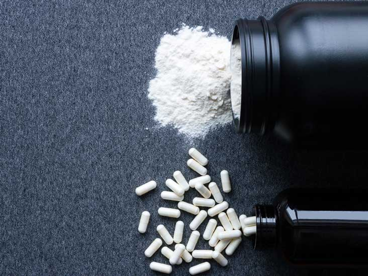
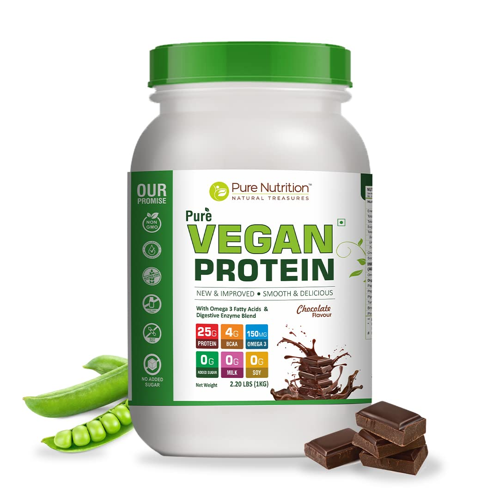

Plant friendly supplements
Creatine
Protein Powder
Stimulants
Best natural supplement
Creatine is the best natural supplement for muscle growth. Years of research have shown that nothing comes close to its effects on your progress.


Most convinient protein source
Protein powder does not need to be in your diet, but it sure makes it easier to hit your macro goals. Does not matter if you are on the run, or need to make some of your baking macro-friendly - protein powder is a choice for you.
Coffee and preworkout
Caffeine is a great supplement, that helps you to push yourself in the gym. There is a direct correlation between its use and growth of lean tissue.
